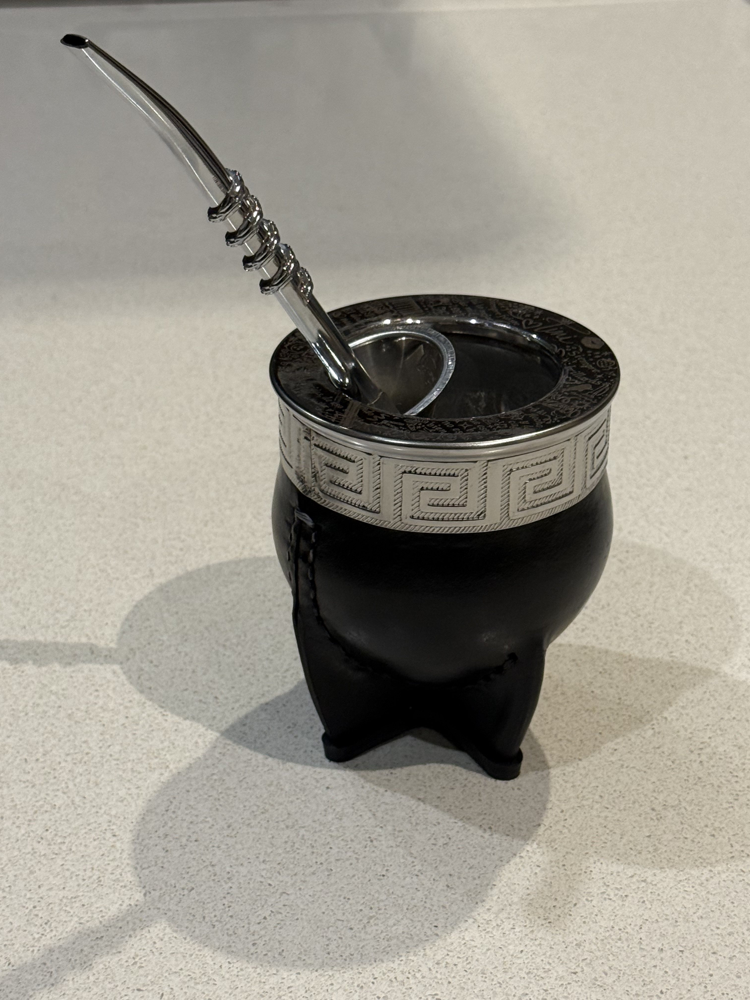
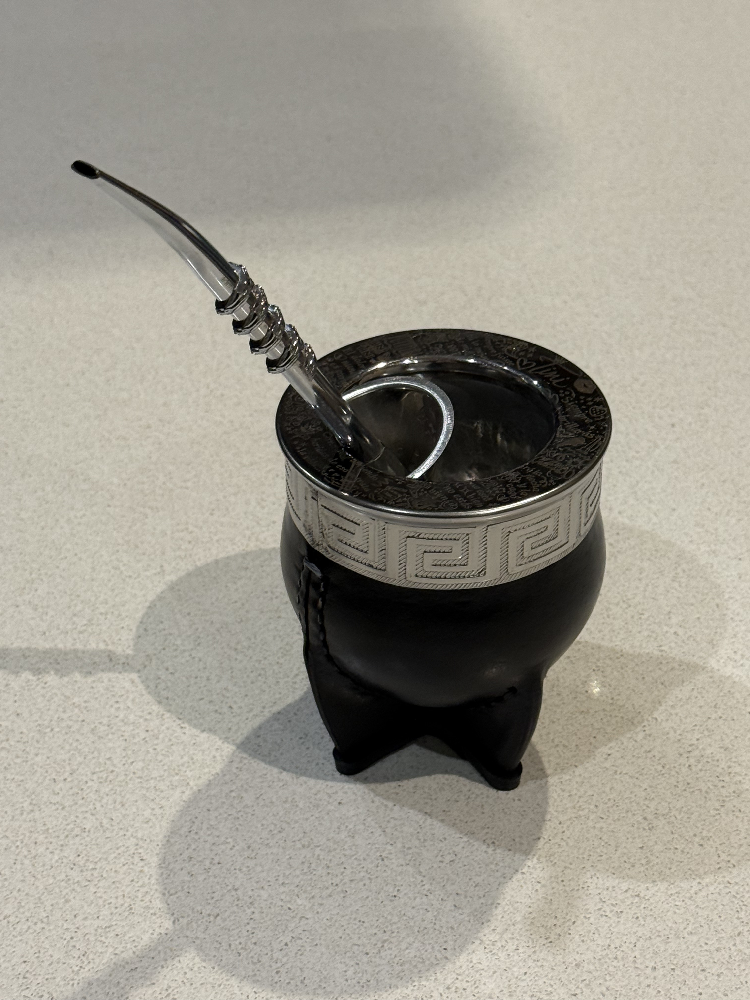
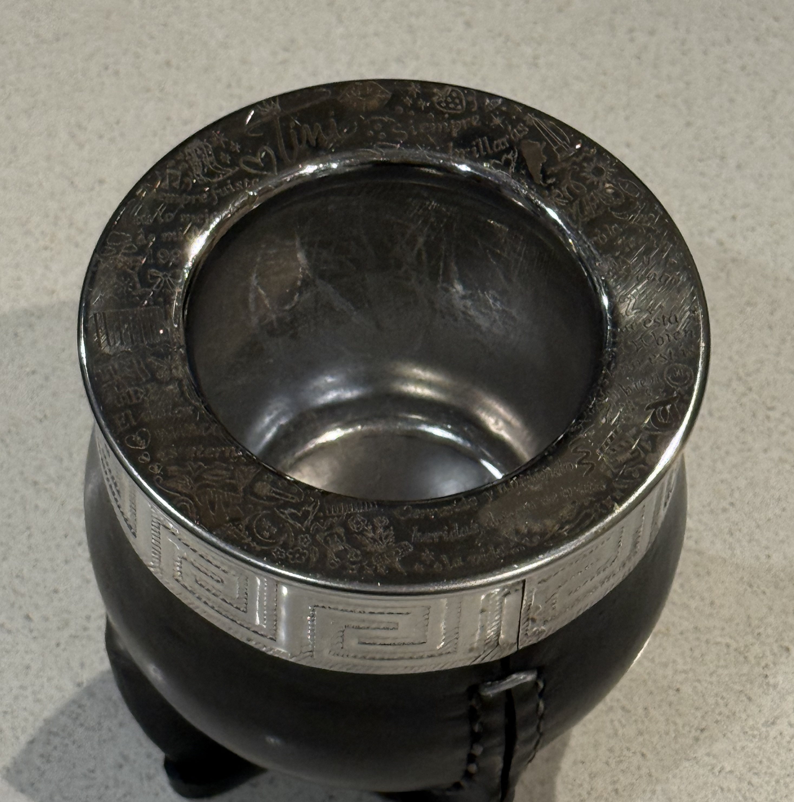

Mate imperial de Tini

- Material: Acero
- Tipo: Imperial
- Estilo: Camionero
- Uso: Para disfrutar de un buen mate en cualquier momento.
Detalles y características
Este mate de acero tipo imperial tiene una presencia especial y está lleno de detalles que lo hacen único.
Sus tallados inspirados en Tini lo convierten en un mate muy personal, de esos que mezclan música, emoción y compañía.
Cuando lo miro siento que no es solo un objeto, sino un pequeño reflejo de lo que me gusta y de los momentos que más disfruto.

